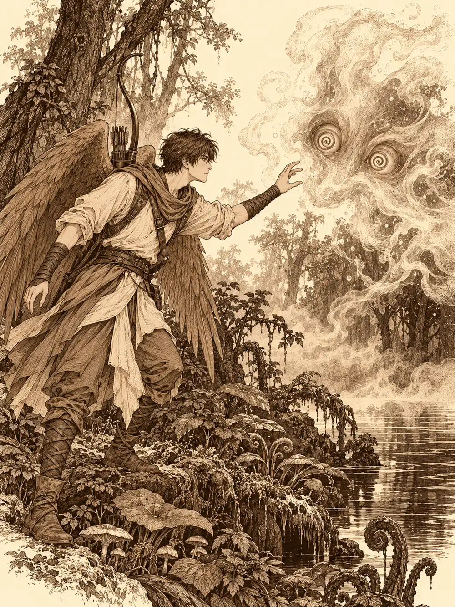

Capítulo 26
Malos sueños
Libro II · El favor del shogun
Hayate llevaba días acarreando madera y piedra a un rincón de la base donde pensaba levantar su altar. Nadie le ayudaba, pero tampoco nadie le estorbaba, y eso ya era algo. A qué dios iba a rezarle no se lo había dicho a nadie. Cuando lo tuviera, lo verían.
Guxi, en cambio, no paraba quieto. Recorría Ukio de punta a punta presentándose a los vecinos, conociendo los negocios y reparando con un par de palabras y un gesto de la mano todas las puertas astilladas que se encontraba, que eran muchas. Shiru, con un resfriado que le hacía gotear la nariz, había decidido acompañarlo, en parte por enseñarle el pueblo y en parte por no perderlo de vista.
Aquella mañana salieron todos juntos de la base. Al pasar junto a un callejón, Hayate y Sirth oyeron una voz que siseaba desde una puerta entornada.
"Aquí. Aquí".
Por la rendija asomaba un ojo. Hayate creyó reconocer la voz. Se acercaron, y en ese mismo instante Guxi, que se había quedado unos pasos atrás, giró la esquina para ver qué pasaba. La puerta se cerró de golpe en sus narices. Llamaron. No contestó nadie. Guxi se encogió de hombros y siguió con Shiru hacia la calle principal, y en cuanto se alejaron, la voz volvió a sonar.
"No aviséis a ese. Es el nuevo, le he visto el sello del shogun. No puede enterarse de esto".
Dentro, entre cajas apiladas, estaba el shinobi al que habían ayudado en la guarida de los dodomeki. Tenía mejor cara y las heridas casi cerradas, y un brillo en los ojos que no era precisamente de arrepentimiento.
"He montado mi propia cofradía de ladrones", anunció. "Aquí, en el pueblo. ¿Queréis hacer negocios conmigo?".
Sirth preguntó a quién pensaba robar, si allí eran todos pobres. El shinobi lo tranquilizó: la organización abarcaría todo Kuroto, Sho, las ciudades del norte. Robarían a quien tuviera mucho y no lo necesitara. Y podían sacar algo más que botín: informantes repartidos por toda la isla.
"Con eso del funcionario", añadió, "creo que lo podemos corromper".
Le propusieron que hiciera una lista de las casas de los ricos más malvados de Kuroto, y el hombre aceptó encantado. Hayate y Sirth pusieron entre los dos trescientas cincuenta monedas para que empezara a contratar gente; el clérigo dejó claro que nada de asesinatos. Las cuentas de cuántos agentes podía pagar aquello no le cuadraron a nadie, ni siquiera al propio shinobi, pero el negocio echó a andar igual, y una primera salida les trajo setenta y una monedas a cada uno.
"No digáis nada al funcionario, que nos cierran el local".
A alguien se le ocurrió que podía disfrazarlo todo de servicio de mensajería. Enviarían cartas a los ricos, y de paso les robarían. Al shinobi le pareció una idea excelente.
Guxi se había propuesto revisar todos los negocios de Ukio, y Shiru lo seguía de uno en uno con la cara de quien asiste a un desastre lento. El puesto de Kimiko lo dejó con el ceño fruncido: las cuentas de un servicio de mercenarios no resistían una mirada atenta, y le dio un mes para ponerlas en orden.
En la tienda de pescado, Haru los recibió con los libros abiertos y todas las cuentas al día.
"Parece que por fin he encontrado un negocio legal en este sitio", dijo Guxi.
En el burdel los esperaba la madame. Cuando el funcionario le pidió las cuentas, se puso a buscarlas con mucho trajín de cajones, y entretanto le ofreció una revista con ilustraciones de sus chicas, por si le interesaba hojearla mientras esperaba. Guxi la guardó en la mochila sin pestañear y le dio también un mes. Las apuestas, explicó, no estaban prohibidas en sí, pero tenían que regularse, y una pequeña parte debía pagarse en impuestos. Hayate, que se había sumado a la visita, observaba los papeles con preocupación.
"Nos van a cerrar el chiringuito", murmuró alguien.
En el templo, el sacerdote no cobraba nada por su labor, y no había nada que regularizar. En la taberna, Kitaro les sirvió de beber mientras el funcionario echaba un vistazo a las cuentas. Los cazadores intentaron de todo. Lo distrajeron, le hablaron del bien que hacían al pueblo, de que algún mal menor era el precio de librar a la comarca de yokai. Alguno le pasó un brazo por el cuello con mucha camaradería. Alguno dejó caer, como quien no quiere la cosa, que si cerraba los negocios de arriba quizá algunos se enfadaran. Guxi no se dejó intimidar.
"No vengo a cortar las alas a nadie. Pero hay que cumplir la ley. ¿Tanto cuesta anotar lo que se paga y lo que se cobra? Son cinco segundos cada vez".
Dentro de un mes, insistió, vendría alguien a revisarlo todo, y si lo encontraba hecho un caos no cobraría nadie y cerrarían todo. Él no quería eso. Era nuevo, sabía que a nadie le gusta un recién llegado que viene exigiendo, pero lo hacía por su bien.
"Pues tomemos una copa", propuso alguien. "Que no ha bebido nada desde que llegó".
La tarde se fue estirando en la taberna. Pidieron de cenar. Hablaron con los otros cazadores del pueblo, con Bill y con los demás. El sake corría despacio y el aire olía a caldo y a madera vieja. Y poco a poco, sin que nadie supiera por qué, empezaron a pesarles los párpados.
Hayate y Sirth fueron los primeros en darse cuenta de que no eran los únicos. En las mesas de alrededor la gente daba cabezadas. Romu se había quedado dormido con la frente sobre los brazos. Kitaro se apoyaba en el mostrador con los ojos cerrados, y Shiro, con las bandejas en las manos, se desplomó sobre el suelo con un estrépito de loza. Era alarmante. Pero el último párpado se les cerró antes de poder hacer nada.
Shiru soñó que Guxi lo cerraba todo. Que llegaban samuráis de la capital, sellaban el puesto de Kimiko y los cazadores se quedaban sin trabajo, y que Zia empezaba a odiarlo. El sueño se cortó como si alguien hubiera rasgado la tela, y en su lugar apareció una criatura enorme, demoníaca, con cuernos y dos espadas en las manos. Era Otakemaru, tal como se lo habían descrito. Ukio ardía. El demonio mataba a los cazadores uno tras otro, y a Zia la mataba delante de él.
Hayate soñaba con una bañera tibia a la orilla de un bosque. Empezó a pesar. Se hundía, y la bañera no tenía fondo, y las plumas se le empapaban y lo arrastraban más abajo, sin aire. Llamó a su nuevo dios y las tormentas no acudieron; estaba aislado. En el fondo se le acercaron unos ojos rojos bajo unos cuernos, y una voz le susurró al oído que todos los cazadores se iban a ahogar.
Guxi estaba en unas termas, rodeado de gente que le acariciaba los hombros, hasta que a sus acompañantes se les empezó a caer la piel. Debajo asomaba una carne rojiza y azulada, y uñas, y todos ellos se convirtieron en versiones del mismo demonio y empezaron a desgarrarlo.
A Sirth el sueño le habló de otra manera, con una invitación a abandonar a su dios. Ninguno de ellos supo, después, cuánto había durado aquello. Ni el pueblo había ardido ni Zia estaba muerta. Pero lo habían sentido.
Despertaron separados, y no en la taberna.

Shiru abrió los ojos apoyado en unas rocas enormes, en un lugar que parecía sacado de un cuento: plantas de formas imposibles, setas, un aire teñido de morado y de azul. Las cosas cambiaban mientras las miraba; una seta desaparecía y en su lugar aparecía un árbol. No era un sitio feliz. Junto a él corría un río, y cuando metió la cabeza en el agua todo se volvió negro, como si hubiera metido la cara en aceite. Salió mojado, aunque el agua se le escurrió enseguida. Echó a andar por la orilla buscando a Guxi para darle un puñetazo, y al pasar atravesó una nube tenue. Algo le arañó la espalda. La nube se espesó delante de él y fue tomando forma: unos ojos, una trompa, un cuerpo de elefante extraño que flotaba en el aire y se deshacía en humo por la cola.
Hayate despertó en una cama, en una cabaña de cazador que no conocía: pieles colgadas, una cabeza de jabalí, flechas por el suelo. Lo primero que hizo fue examinar su arco detalle a detalle para saber si estaba soñando. Le pareció el de siempre, y eso no lo tranquilizó. Salió con cuidado, agazapado, y vio el mismo bosque cambiante. A unos pasos flotaba una nube translúcida. La tocó, por curiosidad, y se le deshizo entre los dedos como humo. Entonces aparecieron dos ojos con espirales que lo miraron fijamente. Hayate cerró los suyos de golpe, y la mirada que pretendía dormirlo resbaló sobre sus párpados. La criatura tomó cuerpo. Él ya había visto algo parecido.
Guxi apareció entre un mar de setas moradas, y al levantarse rozó algunas y le cayó encima una nube de esporas. Contuvo el aliento, aguantó, y se apartó de allí.
"Chicos, si esto es algún rito de iniciación, no tiene gracia".
Una nube se movía hacia él. No esperó a ver qué era. Le disparó un rayo violeta, y la nube se abrió para dejarlo pasar y volvió a cerrarse. Después tomó forma, igual que las otras.
Hayate reconoció a las criaturas. Eran baku. Los baku traían buenos sueños; eso era lo que sabía de ellos. Estos atacaban con garras, colmillos y cargas, y soltaban humo y sueño.
Lo difícil fue encontrarse. El bosque era espeso, y se oían unos a otros sin verse. A lo lejos, una voz llamaba: era Sirth, aunque nadie sabía de dónde venía.
Hayate levantó a su alrededor un chorro de viento que mantenía a raya a las criaturas, y cuando una le acertó con las garras saltó de él un rayo que le cayó encima y la llenó de chispas. Una de las copias se deshizo en humo bajo sus golpes y no volvió. Remontó el vuelo por encima de los matorrales para orientarse. Shiru peleaba con el escudo en la orilla del río, y fue él quien, siguiendo los gritos de Sirth, dio con el clérigo en el fondo de un pozo de diez o quince metros. Le lanzó una cuerda y tiró. El clérigo salió arañándose las manos y, en agradecimiento, le tendió un hilo de su propia sangre que le cerró las heridas.
Había un baku distinto. Era menos translúcido que los demás y llevaba al cuello un collar rojo. Se acercó a Guxi y le cantó algo parecido a una nana, y el artífice se quedó dormido en el sitio. Hayate tuvo que bajar a despertarlo. Guxi se puso en pie, levantó su torreta y disparó; los disparos se perdían entre la maleza. Probó con la pistola. Tampoco.
"Yo estoy para trabajar detrás de un escritorio", gruñó. "No para el combate".
Poco a poco, entre el río y los arbustos, se fueron reuniendo alrededor del baku del collar. La criatura se movía de manera errática, nerviosa, como si estuviera furiosa o asustada, y atacaba a quien tuviera delante sin explicar nada. Alguien le gritó que mirara hacia otro lado, que allí había algo, y por un instante la criatura giró la cabeza. Sirth se acercó, examinó con extrañeza el cuello del animal y le lanzó un rayo. Entonces el baku le clavó los colmillos.
El clérigo se quedó un momento quieto, empapado en su propia sangre. Shiru, que estaba a su lado, lo oyó reírse. Era una risa de loco, aguda, desatada.
"Sangre", decía. "Muerte".
Hayate y Shiru golpearon cuanto pudieron. Guxi falló otra vez. Y Sirth, ya fuera de sí, sacó el látigo de cadenas, que se volvió negro en su mano, y lo descargó sobre la criatura. El baku se corrompió desde dentro. Se desplomó, y donde había estado quedó un montón de carne podrida y negra, con el collar rojo y una bolsa encima.
Las otras nubes se disiparon. Eran copias del mismo.
Sirth recogió el collar y lo examinó. No le pareció mágico. Tenía una chapita con unos símbolos extraños que a él no le dijeron nada, pero que Hayate y otro de ellos reconocieron: eran los de Otakemaru. La bolsa, en cambio, desprendía magia. Contenía unos polvos de hada que podían arrojarse contra una criatura para dejarla asustada, ciega, derribada, envenenada o paralizada, según los caprichos del polvo, y solo un par de veces antes de que la bolsa necesitara reposar. A veces, además, salían mal, caían sobre quien los lanzaba y lo convertían durante unos instantes en una oca gigante que no reconocía a sus amigos.
Discutieron quién debía llevarla. Alguien propuso ofrecérsela a Guxi, como gesto para suavizar las cosas, y el artífice, a su vez, se ofreció a ayudarlos con las cuentas de los negocios. Seguían discutiendo cuando Shiru dijo algo en voz alta, se despertó y se encontró con la cara pegada a una mesa de la taberna.
Estaban todos allí. Guxi, Hayate, Sirth, con la sangre seca en la cara. Shiro se incorporaba del suelo con un hilo de baba en la barbilla. La gente despertaba sobre las mesas sin entender nada, y Zia, acurrucada como un gato, se lamía el dorso de la mano. Les dolía todo. Tenían heridas. Sirth miró su puño cerrado y lo abrió: tenía el collar. La bolsa también estaba allí.
"Estabais en mi sueño", dijo alguien.
"Pues duele una barbaridad para ser un sueño".
Guxi volvió a examinar el collar con más calma, y esta vez sí encontró algo: un encantamiento depositado junto a la chapita. Fuera lo que fuese, aquello controlaba a la criatura. Pensaron en el baku del collar, en su nerviosismo, en cómo atacaba sin hablar. No era libre. Probablemente se le podría haber liberado quitándole el collar. Ya no.
Alguien le explicó al funcionario lo de Otakemaru: los avisos, los ataques, el demonio que según decían vendría a invadir Kuroto. Querían avisar al shogun cuanto antes. Guxi negó con la cabeza.
"Mejor mantener la calma. Si vamos alarmando a todo el mundo sin saber nada, y luego ese hombre viene dentro de cincuenta años, quedaremos como idiotas. Reunamos información primero. Cuando sepa algo, se lo diré".
Le tendió una servilleta a Sirth.
"Límpiate un poco".
El clérigo se la pasó por la cara, despacio, y dejó en el lino una mancha oscura. A su alrededor, la taberna entera se desperezaba con la torpeza de quien sale de una pesadilla compartida, y sobre la mesa, entre los cuencos fríos de la cena, el collar rojo brillaba a la luz de los farolillos.